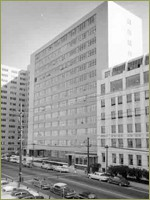
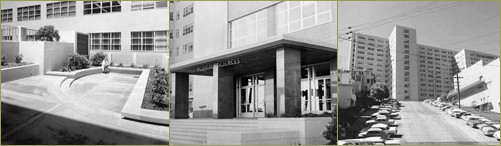
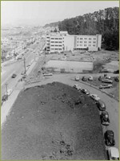

Buildings
BRICKS AND MORTAR: MOFFITT AND MEDICAL SCIENCES
by Nancy Rockafellar
by Nancy Rockafellar


The cross-shaped, fourteen-story teaching hospital was designed by architects Timothy and Milton T. Pflueger and the multi-story Medical Sciences building would adjoin both the new teaching hospital and the clinics building located west on Parnassus. It was designed by the supervising architectural firm for the medical center: Blanchard and Maher.Moffitt Hospital and the Medical Sciences Building
The two buildings were intended to function as an integrated unit, with direct access between basic research facilities and the teaching hospital's clinical facilities. The Medical center was to be funded with $20 million from state funds, $1 million from the U. S. Public Health Service and private grants.

LEFT: Patio off of the Medical Sciences building.
CENTER: Entrance to the Medical Sciences Building
RIGHT: View of Moffitt Hospital from Arguello Street
CENTER: Entrance to the Medical Sciences Building
RIGHT: View of Moffitt Hospital from Arguello Street

Building site for Moffitt Hospital and the Medical Sciences building